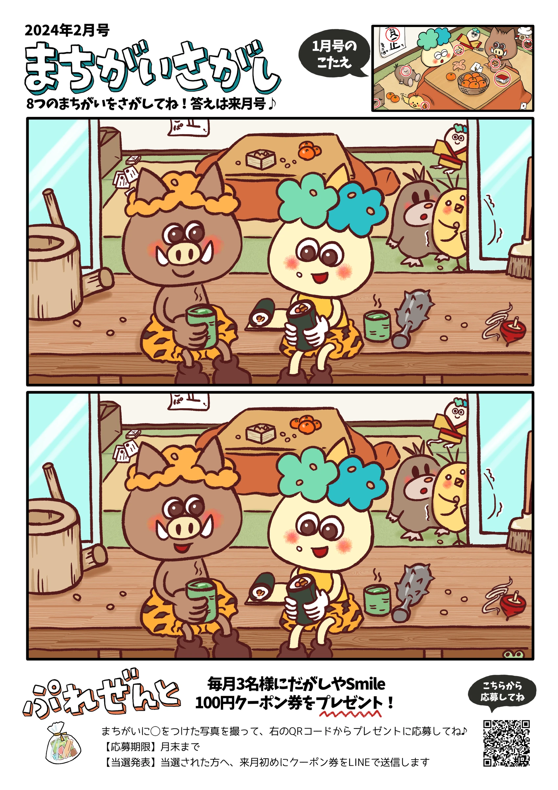
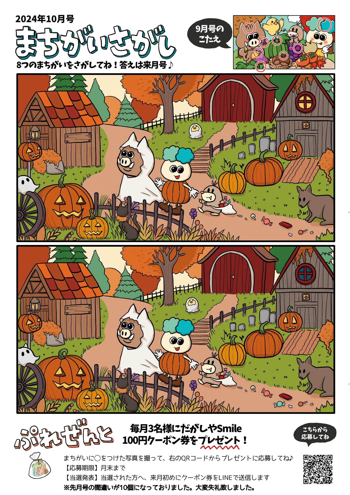

SPOT THE DIFFERENCE
まちがいさがし
猪狩工務店 広報誌 2024年2月号

猪狩工務店 広報誌 2024年4月号

猪狩工務店 広報誌 2024年7月号
猪狩工務店 広報誌 2024年10月号

スマートフォンでは、ピンチ操作で拡大できます。
まちがいさがしの制作例へ戻るSPOT THE DIFFERENCE


スマートフォンでは、ピンチ操作で拡大できます。
まちがいさがしの制作例へ戻る